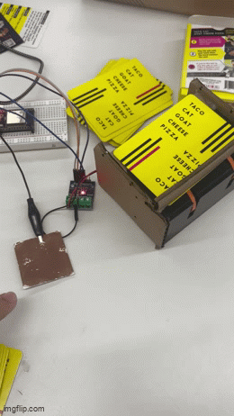

<div class="textcontainer">
<p class="margin"> </p>
<h3>Week 6: Electronic Inputs</h3>
<p class="margin"> </p>
<h2><b><u><i>Assignment 1: Piezo Sensor</h2></u></b></i>
<h4> For my first assignment, I utilized a piezo sensor to detect my hand when I knock or slap the table. Everytime I did, 2-3 cards would come out of the machine. The piezo would detect the vibration of it. </h4>
<p class="margin"> </p>
<p class="margin"> </p>
<h4> I encountered multiple problems when trying to code and calibrate the sensor, and almost gave up at one point. No matter what, the piezo could only detect when I physically touched it, not when I touched the table. However, once I set the max value of the piezo detector to 200, it was able to sense the low vibrations from hitting the table. For the circutry, I used the one provided on the website. </h4>
<p class="margin"> </p>
<img src="piezocircutry.jpg" alt="Flowers in Chania" width = 200;
</div>
<h6><b> I used a wire from the piezo to a digtial pin and ground, and used 2 1 megaomn resistors.</b><h6>
<p class="margin"> </p>
<h4> For the code, I used a simple if statement. If the piezo read above a value of 200-300, the DC motor would run for a few milliseconds, and stop. Next time, I want to try coding out the delay function but I ran out of time. <h4>
<pre><code class="language-arduino">// Pin where piezo is connected
int piezoPin = 33;
const int A1A = 14; // define pin 12 for A-1A (speed)
const int A1B = 12; // change to your analog pin
void setup() {
Serial.begin(115200);
pinMode(piezoPin, INPUT);
pinMode(A1A, OUTPUT); // specify these pins as outputs
pinMode(A1B, OUTPUT);
digitalWrite(A1A, LOW); // start with the motors off
digitalWrite(A1B, LOW);
}
void loop() {
int piezoValue = analogRead(piezoPin);
Serial.println(0);
Serial.print(" ");
Serial.print(piezoValue);
Serial.print(" ");
Serial.println(4096);
delay(2); // adjust the delay as needed
if (piezoValue > 200){
digitalWrite(A1A, HIGH);
digitalWrite(A1B, LOW);
delay (800);
}
else if (piezoValue == 0){
digitalWrite(A1A, LOW);
digitalWrite(A1B, LOW);
}
}
</pre></code>
<h3><b>Calibration</b></h3>
<h4>The max value for the sensor is 4095, and the minimum is 0. I control the values through how aggresively I knock/produce a vibration on the piezo. However, the piezo doesn't fully work, but works well enough to detect different strengths -- shown in this video.</h4>
<p class="margin"> </p>
<h6><h6><b><i> I do a tap, then a knock, then a hand slap, then touch the actual sensor. </b><h6></i>
<p class="margin"> </p>
<h4> -- <h4>
<p class="margin"> </p>
</pre></h4></h4></h6></h6></u></b>
</p>
<h6><h6><b> This is the serial monitor after a finger tap. The peak value is 280. </b><h6>
<p class="margin"> </p>
</p>
<h6><b> This is the serial monitor after I hit the table with my hand. The peak value is 650. </b><h6>
<p class="margin"> </p>
</p>
<h6><b> This is the serial monitor after I knocked the table. The peak value is 1200. </b><h6>
<p class="margin"> </p>
</p>
<h6><b> This is the serial monitor after I touched the sensor. The peak value is 4095. It is extremely sensitive when I put my finger on it. </b><h6>
<p class="margin"> </p>
<h4> Here is the data compiled into a table -- it reflects how the harder I provide a vibration, the more the sensor picks up. Decently linear relationship.
<p class="margin"> </p>
<style>
table, th, td {
border:1px solid white;
color: white;
}
</style>
<body>
<table style="width:100%" color: white >
<tr>
<th><i>Action</th>
<th><i>Value</th>
</tr>
<tr>
<td><h5><b>No force</td>
<td><h5>Returns value of 0.</td>
</tr>
<tr>
<td><h5><b>Finger tap</td>
<td><h5>Very little force, returns a value of 200-300 (280).</td>
</tr>
<tr>
<td><h5><b>Hand tap</td>
<td><h5>Slightly aggresive force, returns value of 600-700 (650). </td>
</tr>
<tr>
<td><h5><b>Knock</td>
<td><h5>Aggresive force, returns value of 1000-1300 (1200).</td>
</tr>
<tr>
<td><h5><b>Touching Sensor</td>
<td><h5>Most sensitive, returns max value (4095).</td>
</tr>
</table>
<p class="margin"> </p>
<h2><b><u><i>Assignment 2: Capacitive sensor</h2></u></b></i>
<h4> Due to timing issues, I made this sensor a little simpler. It's a touch pad, so everytime I touch the copper piece, the gear will run. So for as long as my finger is on the sensor, cards will continously fly out. I may consider using this feature for my shuffling in my final project. It also varies based on how much pressure you apply on the pad. <h4>
<p class="margin"> </p>
<h4> For the code, I used a touch pin to read the values from the pin when I touched the values. The max was 53 while the minimum was 0. Then, I used some motor logic and a delay function to run the motor. <h4>
<p class="margin"> </p>
<pre><code class="language-arduino">//
// Using T5 (GPIO 12)
#define TOUCH_PIN T5
const int A1A = 2;
const int A1B = 4;
void setup() {
Serial.begin(115200);
delay(1000); // Wait a second for Serial to start
pinMode(A1A, OUTPUT); // specify these pins as outputs
pinMode(A1B, OUTPUT);
digitalWrite(A1A, LOW); // start with the motors off
digitalWrite(A1B, LOW);
}
void loop() {
int touchValue = touchRead(TOUCH_PIN);
Serial.println(touchValue);
delay(100);
if (touchValue < 30){
digitalWrite (A1A, HIGH);
digitalWrite (A1B, LOW);
}
else{
digitalWrite (A1A, LOW);
digitalWrite (A1B, LOW);
}
}
</code></pre>
<h3><b>Calibration</b></h3>
<h4> The maximum value for the sensor was 52 and the minimum was 0. Since it's a touch sensor, there are only two values. Here are some videos showing the function:
<p class="margin"> </p>
<img src="function.gif" alt="Flowers in Chania" width = 200;
</div>
<p class="margin"> </p>
